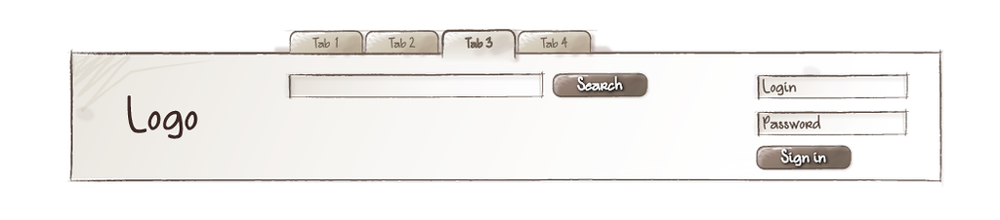
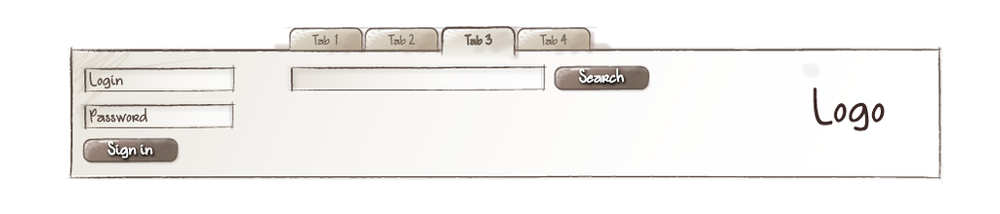
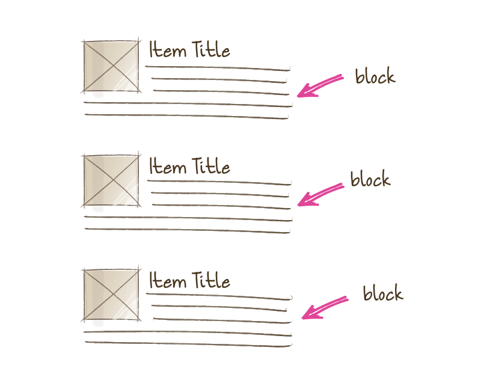

February 2016
BEM
What?
Front-End Methodology/Convention
Block, Element, Modifier
Block
An Independent Page Component - simple or compound (containing other blocks).Basic Block Structures
Nested
Block-ception.
Arbitrary
Blocks can move around a page without losing functionality or appearance.


Re-Usable
Blocks can be repeated within one page.

Element
A child of the Block.

Modifier
Defines the appearance or behaviour of a block or element.

Why?
“Discipline is your only defence in terms of maintainability”
How?
HTML
<div class="block">
<div class="block__element">
</div>
<div class="block__element block__element--modifier">
</div>
</div>
CSS
.block{}
.block__element{}
.block__element--modifier{}
So...
HTML
<ul class="list">
<li class="list__item">
</li>
<li class="list__item list__item--active">
</li>
</ul>
.list{
display: block;
}
.list__item{
color: #000;
}
.list__item--active{
color: #ffc0cb;
}
Elements Within Elements
Wrong
<ul class="list">
<li class="list__item">
<a class="list__item__link">
</a>
</li>
</ul>
Right
Ensures an element can be swapped around, removed or added without modifying existing code.
<ul class="list">
<li class="list__item">
<a class="list__alink">
</a>
</li>
</ul>
Pre-Processors
If you're in to that sort of thing :)Sass/Less
.block {
// block styles
&__element{
// element styles
&--modifier {
// modifier styles
}
}
}
.block {
// block styles
&__element{
// element styles
&--modifier {
// modifier styles
}
&:hover{
//pseudo-class styles
}
}
}
Resources